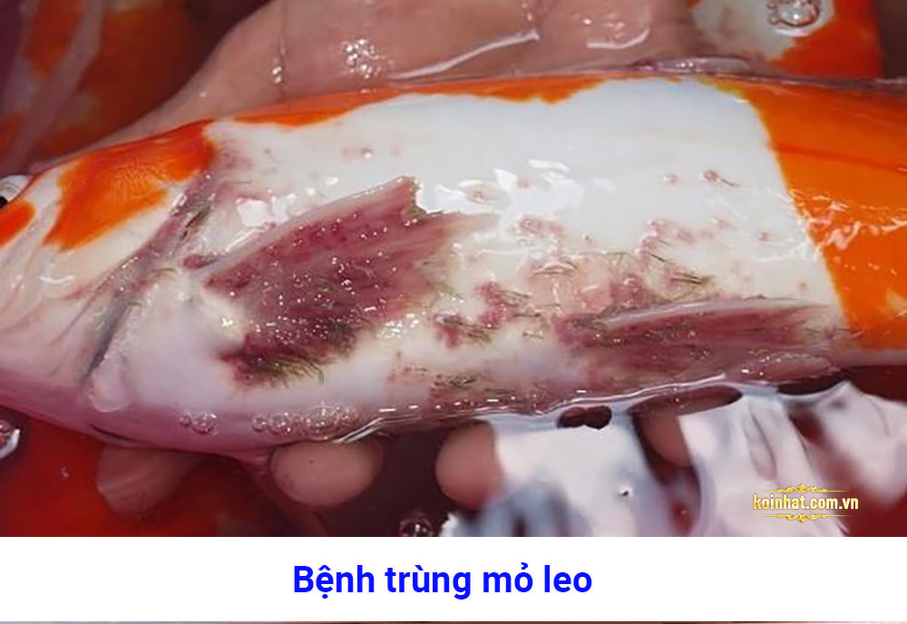
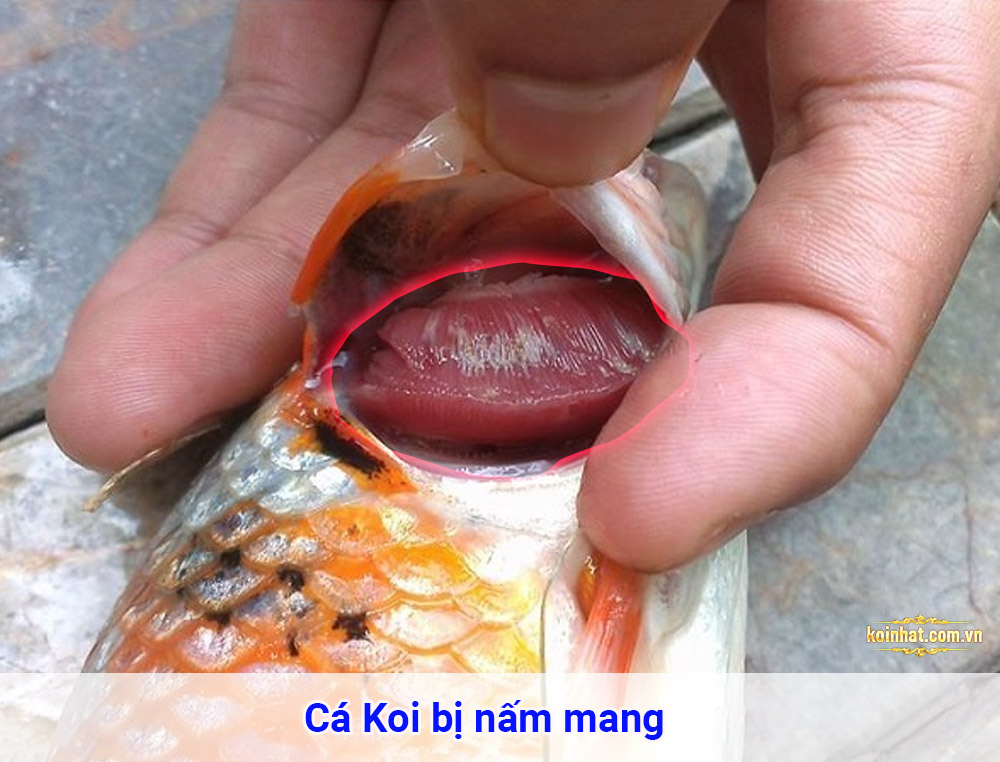
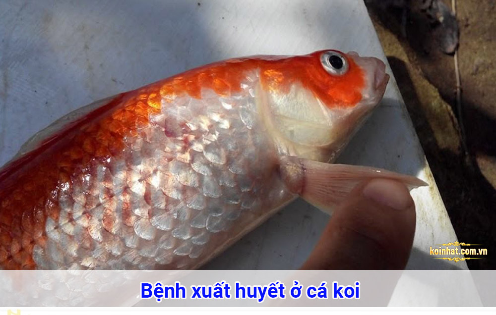
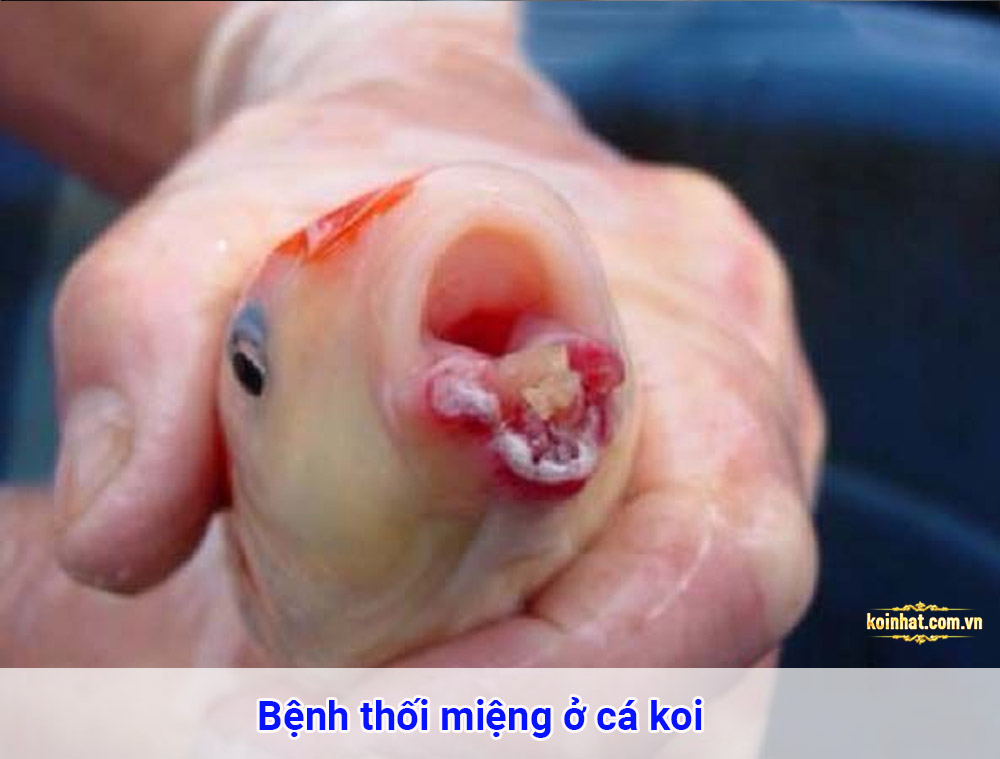

Các bệnh cá koi kèm dấu hiệu và cách phòng, chữa bệnh
tổng hợp tất cả các bệnh phổ biến nhất cá Koi thường bị. Cung cấp đầy đủ dấu hiệu nhận biết,
điều trị và cách phòng bệnh. Các bạn lưu lại để sử dụng ngay khi cần thiết.
Cá koi bị trùng mỏ neo
Đây là bệnh thường gặp nhất ở Koi Nhật. Do kí sinh Lernea – Anchor Worm gây ra. Bám chặt vào thân,
đuôi có thể thấy bằng mắt thường. Còn nhỏ trùng sống trong mang cá, trưởng thành con đực và cái giao phối,
con đực rời khỏi mang rồi chết. Trùng cái tiếp tục tồn tại, hút dưỡng chât, sinh nở gây ra các vết thương cho koi.
Koi ngứa ngáy, lười ăn, gầy bơi nơi chậm.

Điều trị: Thuốc Dimilin (dùng đúng theo hướng dẫn của bác sĩ dựa trên số lượng koi nhiễm, thuốc có thành phần thuốc trừ sâu). Nếu hồ có cây thủy sinh không dùng được thuốc (trừ khi cây cao hơn mặt nước 3 cm).
- Đánh thuốc 1gr.m3
- Hướng dẫn đánh:
- Ngày 1: Liều thuốc phụ thuộc vào hồ/bể koi số lượng, tình trạng (theo hướng dẫn bác sĩ)
- Ngày 2: Không đánh thuốc.
- Ngày 3: Đánh liều 2 như liều 1, thay 20% nước
- Ngày 4, 5, 6: Không đánh thuốc
- Ngày 7: Đánh liều 3, thay 20% nước
- Ngày 8: Không đánh thuốc
- Ngày 9: Đánh liều 4, thay 20% nước
- Ngày 10, 11: Không đánh thuốc
- Ngày 12, 13, 14: Mỗi ngày thay 20% nước
Phòng bệnh:
- Vệ sinh hồ nuôi, hệ thống lọc
- Đảm bảo nước sạch
- Khử trùng giày dép trước khi vào hồ, dụng cụ hồ nuôi
Cá koi bị nấm mang
Thở bất thường, thở nhanh, gấp hoặc ngáp ngáp, khó thở, mang đánh liên tục.
Hệ hô hấp bị ảnh hưởng nên thiếu oxy, mang đập mạnh, nhìn mang cá sẽ thấy các vết màu trắng loang lổ.
Cá thường chết sau 3 ngày, bệnh lan nhanh sang các con khác, nên cần xử lý kịp thời.

Điều trị:
- Đánh Cloramin T liều lượng 7.5g/1m3 nhưng phương pháp này chỉ cứu được các con chưa nhiễm bệnh, thiệt hại cả hồ. Sau 2 ngày thyay 50% nước, đánh lại lần 2. 15 – 20mg/1000 lít để tiêu độc, khử trùng toàn bộ mầm bệnh trong hồ KHÔNG CÓ CÁ.
- Bổ sung vitamin C vào thức ăn tăng sức đề kháng cho Koi
- Nâng hoặc hạ nhiệt độ nước tùy vào nhiệt độ môi trường, khí hậu để giảm tỉ lệ chết (không diệt được vi rút).
Phòng bệnh:
- Vệ sinh hồ cá thường xuyên
- Đảm bảo hệ thống lọc hoạt động trơn chu, hiệu quả
- Khử trùng giày dép trước khi thăm hồ.
Cá koi bị lồi mắt
Do vi khuẩn Steptococcus gây ra, thường do hệ thống lọc không tốt, nước bị ô nhiễm.
Koi mất phương hướng bơi lội, bơi lờ đờ, hay bơi quay tròn, xoay vòng không rõ bơi đi đâu. Mắt cá dần to lên,
tổn thương lòng mắt, viêm mắt, mắt lồi ra, xuất hiện những vết lở loét ở quanh mắt, trên da của cá.
Gốc vi cá xuất huyết , có đốm mủ dưới da cá, nếu bị vỡ ra thì thành các đốm loét. Cá ăn ít đi, bỏ ăn.
- Giảm lượng thức ăn hàng ngày của Koi hoặc cắt luôn thức ăn để giữ vệ sinh nước hồ
- Sử dụng thuốc khangs inh: Norfloxacin (hoặc CIPROFLOXACIN), Erythromycin, Florphenicol, Doxycycline, cafalexin (hoặc Amocicillin, Ampicillin). 15 – 25g/tấn cá/ngày, chia 2 – 3 lần/ngày, liên tục 5 – 7 ngày.
- Tách riêng những cá koi bị bệnh để ngâm trong thuốc
- Nhân chia tỷ lệ thuốc với trọng lượng koi nhiễm bệnh tương ứng
- Mỗi ngày thay 2/3 nước ngâm, sử dụng thuốc đến khi mắt hết sưng lồi thì ngừng.
Phòng bệnh:
- Lắp đặt hệ thống lọc đảm bảo tiêu chuẩn
- Đảm bảo nguồn nước, chất lượng nước sạch
- Khử khuẩn giày dép trước khi vào hồ Koi.
Cá koi bị xuất huyết
Thân koi chuyển màu tối (có thể lồi 1 mắt hoặc cả 2 mắt). Mang màu nhạt hơn bình thường.
Vảy cá phần bụng, phần đuôi, vây cá bị xung huyết chuyển sang màu hồng
(có thể xuất huyết thành dạng đốm nhỏ trên da, miệng, mắt, hậu môn, gốc vây cá).
Cá nổi lên mặt nước, tụ thành bầy đàn, tốc độ bơi giảm dần, chết.

Điều trị:
- Bắt cá bị bệnh cách ly ra tank. Dùng thuốc tím (potassium permanganate). Bắt Koi ra thả vào trong chậu nước đã pha thuốc tím. Tỷ lệ 10g thuốc tím pha 80 – 100 lít nước. Tùy theo cá nặng hay nhẹ. Tiếp theo thả cá vào tank cách ly cho muối 3/1000 + C Sủi 8 – 10 viên/1 m3. Tiếp đến chạy sủi bơm lọc từ 1 – 2h để cá phục hổi khi mới tắm tím nồng độ cao. Sau cùng dùng tetracylin ( 500mg/1viên ) tỷ lệ 10viên/1m3 + refamicin ( 300mg /1viên) 10 viên /1m3. + cloramin T ( 5g/1m3 ở hồ có pH dưới 7 và 7g/1m3 ở hồ có pH 7 hoặc trên 7 .
- Thay nước mỗi ngày 30%, bổ sung lại thuốc + muối khi đã thay đi, liên tục trong 3 – 5 ngày.
- Trong thời gian cách ly cá xử lý lại hồ nuôi, hệ thống lọc, chạy nước mới châm vi sinh.
Phòng bệnh:
- Hệ thống có bộ lọc đạt chuẩn
- Cho cá ăn đủ lượng thức ăn
- Không cho cá ăn liên tục khiến lọc quá tải
- Thời tiết quá xấu nên cho cá nhịn ăn tạm thời để giữ nước sạch
- Vệ sinh giày dép, các vật dụng
Cá Koi thối miệng
Cá giảm ăn, ăn ít, bỏ ăn. Bơi lờ đờ

Điều trị: Ngừng cho ăn ngay lập tức, thay nước 30%. Cách ly cá nhiễm bệnh ra Tank. Ngâm muối, loại bỏ các vết thương bằng peroxide hoặc iodine theo hướng dẫn của thuốc.
Phòng bệnh: Vệ sinh hồ nuôi, hệ thống lọc, đảm bảo chất lượng nước. Cho cá vừa đủ, tránh làm ô nhiễm nước.
 Trang chủ
Trang chủ 0123456789
0123456789